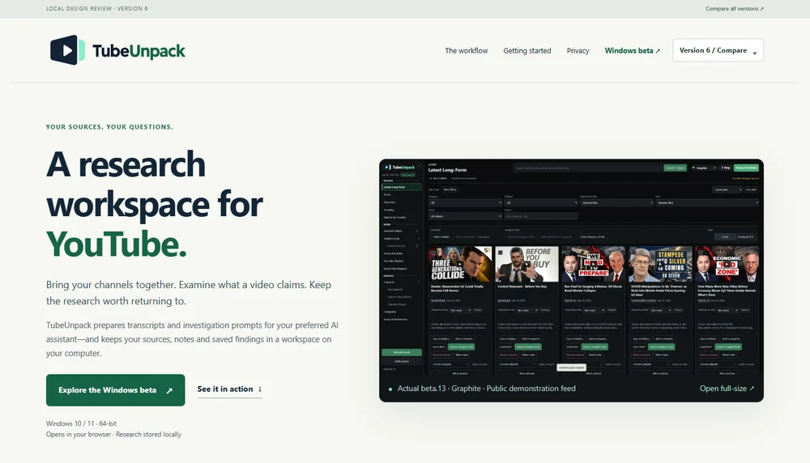
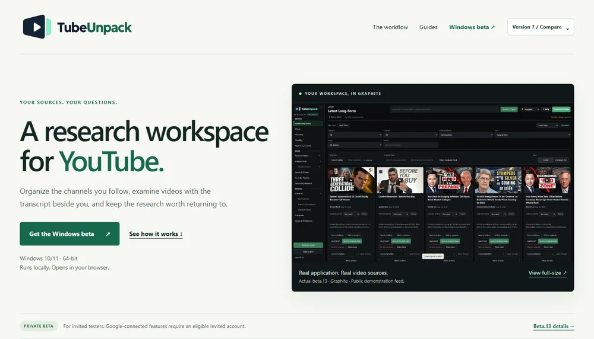
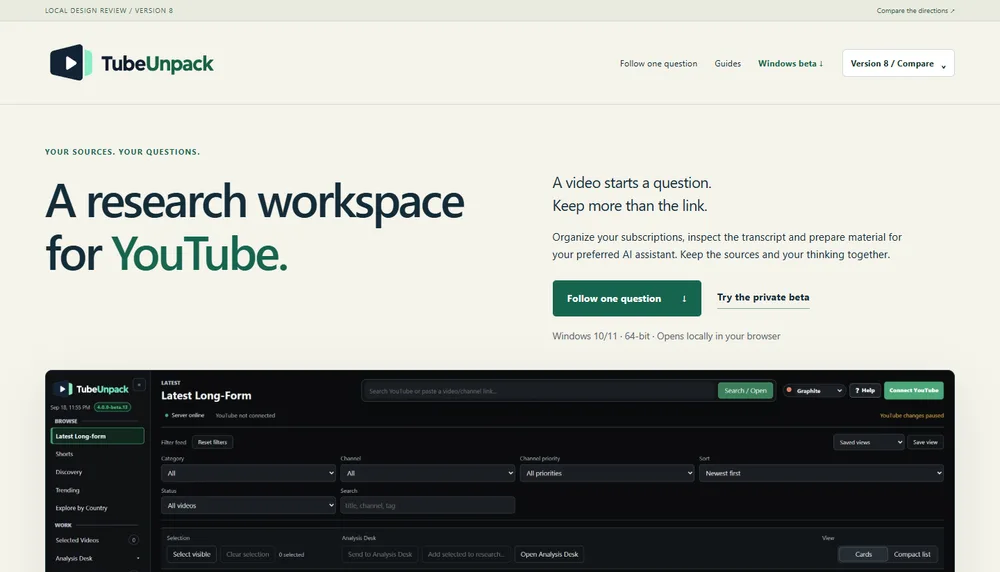
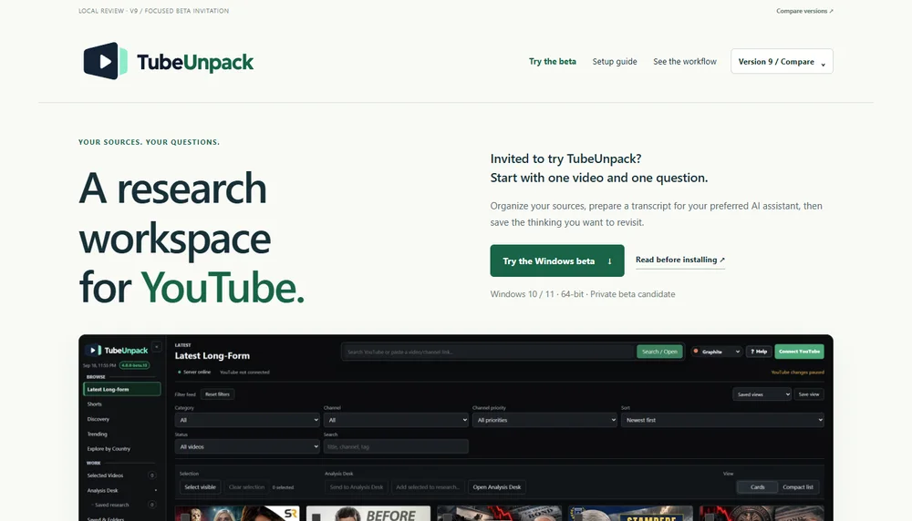

WEBSITE REVIEW / OCTOBER 2026
One product.
Four directions.
Compare V6–V9 before choosing what goes live. Each keeps the TubeUnpack identity, real application captures and the beta.13 download-area design.
This comparison area is online for screen testing. The existing main homepage is unchanged. V1–V5 remain available as references. These are website design versions, not different application releases.
Start with Version 7 ↗

VERSION 6CONTINUITY
The familiar page, refined.
The closest continuation of V5: four large demonstrations, a candidate download-area preview and clear routes into the guides.
- Best for
- Keeping the structure we have already developed.
- Watch for
- How much introductory copy you want beside each step.
Open Version 6 ↗
VERSION 7START HERE
A clear guided product tour.
A strong starting point for someone new to TubeUnpack. See the workspace, understand four useful steps, then try the beta.
- Best for
- A general introduction to the product.
- Watch for
- Whether each chapter makes its purpose immediately clear.
Open Version 7 ↗
VERSION 8A RESEARCH STORY
Follow one question.
A Vienna housing example gives the features a reason to exist. Current beta.13 research captures show what stays with the user.
- Best for
- Explaining what “research workspace” actually means.
- Watch for
- The trade-off between a concrete story and a longer page.
Open Version 8 ↗
VERSION 9INVITED TESTERS
A focused beta invitation.
A shorter route from invitation to a first useful session. Setup, the installer and feedback are prominent; the full tour is optional.
- Best for
- People who have already agreed to test.
- Watch for
- Whether the optional demonstrations are visible enough.
Open Version 9 ↗
HOW TO COMPARE
Three useful questions.
- Can a new visitor explain what TubeUnpack does after the first screen?
- Do the demonstrations make the next action clear, especially saving and finding research?
- Can an invited tester find the installer, setup instructions and feedback checklist without searching?
About the installer preview
The 4.0.0-beta.13 candidate 1 is shown for design review; the executable is not hosted in this comparison area. It is unsigned, and the release manifest does not approve unrestricted public distribution. Website checks are not a substitute for a clean-Windows install test or a fresh invited-account connection test.
View the exact candidate identity ↗